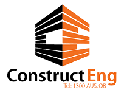

Clear timelines
You'll know upfront whether a search is passive, proactive, or both — and what to expect at each stage.

How we find, screen and deliver the right candidate — every time — across construction, engineering and insurance.
Every search starts with understanding the role properly — the team, the person, and what genuinely differentiates the opportunity. From there, we run a consistent, evidence-based process so every hiring decision is backed by structured, comparable evidence rather than gut feel.
You'll know upfront whether a search is passive, proactive, or both — and what to expect at each stage.
Every candidate is assessed against the same structured criteria, not impressions.
Tracking sheets and shortlist ratings mean you always know where a search stands.
Sensitive and executive searches run confidentially, without your name attached until a candidate opts in.
The right approach depends on role seniority, market scarcity, and urgency — often, it's both at once.
Every application is assessed against a consistent lens before any conversation takes place — so the candidates you meet are genuinely worth your time.
Every shortlisted candidate gets the same first conversation, covering:
Preferred candidates then meet the hiring team in person, evaluated on the same structured basis.
Before a single new search is run, we check what's already known:
A dedicated project is created and targeted profiles identified across professional networks.
You review each profile — a simple Good Fit / Not a Fit call — before any outreach happens.
A live tracking sheet keeps you updated on progress at every stage, no chasing required.
We use AI to work faster — never to replace judgement. Every AI-assisted step still feeds into the same structured, evidence-based process described throughout this brochure.
AI tools integrated with LinkedIn Recruiter help us map the market and build talent pools faster, surfacing candidates a manual search could miss.
AI helps us triage and prioritise applications at volume, so more of our time goes to the candidates genuinely worth a conversation.
AI speeds up drafting — every message is still reviewed and personalised before it goes out, never a mass template.
For sensitive or senior appointments, discretion protects everyone involved. Target candidates are approached by an independent contact who does not disclose the engaging organisation until the candidate confirms genuine interest — at which point they're asked to sign an NDA before any further detail is shared.
Founded by Simon Bloom in 2009, ConstructEng Australia grew into a six-consultant recruitment brand with a LinkedIn network of over 15,000 industry professionals — spanning construction, engineering and insurance.
"Your experience, organisation, forward planning and prompt actioning of requests has made it a delight working with you — it is the best recruitment service I have personally experienced."
"Simon's network within the infrastructure and construction industries is second to none. He brought deep industry insight to both the internal clients and candidates he worked with."
A structured, evidence-based process — built to find the right person, not just a fast one.